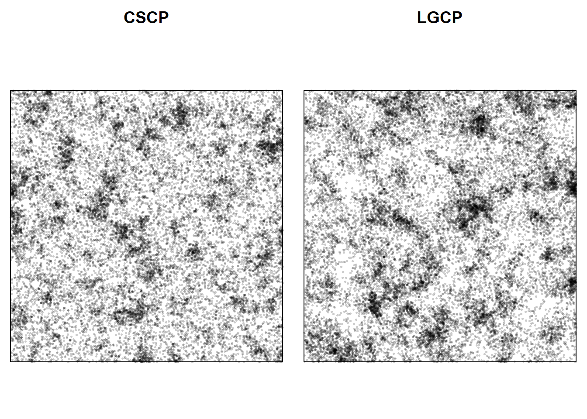
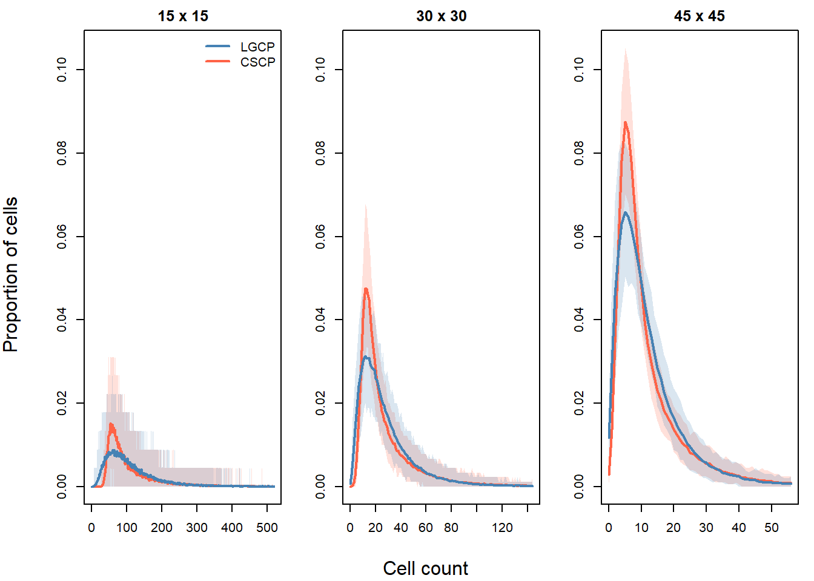
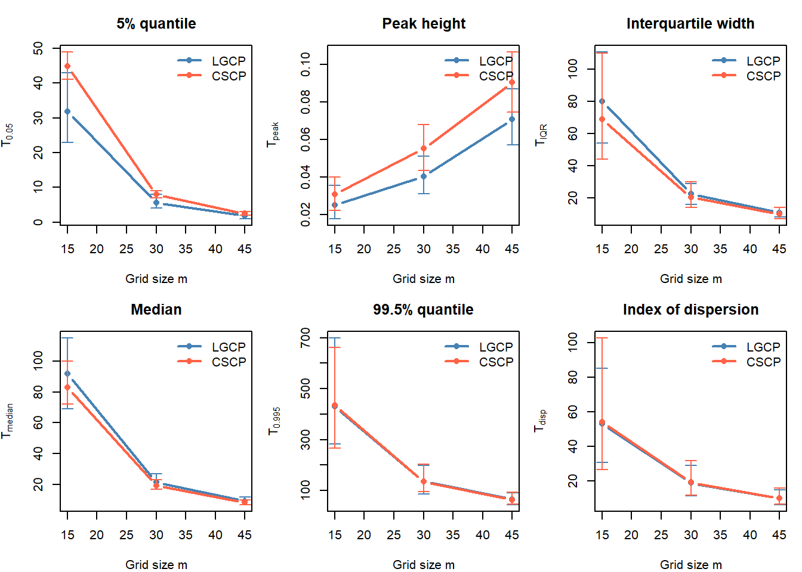
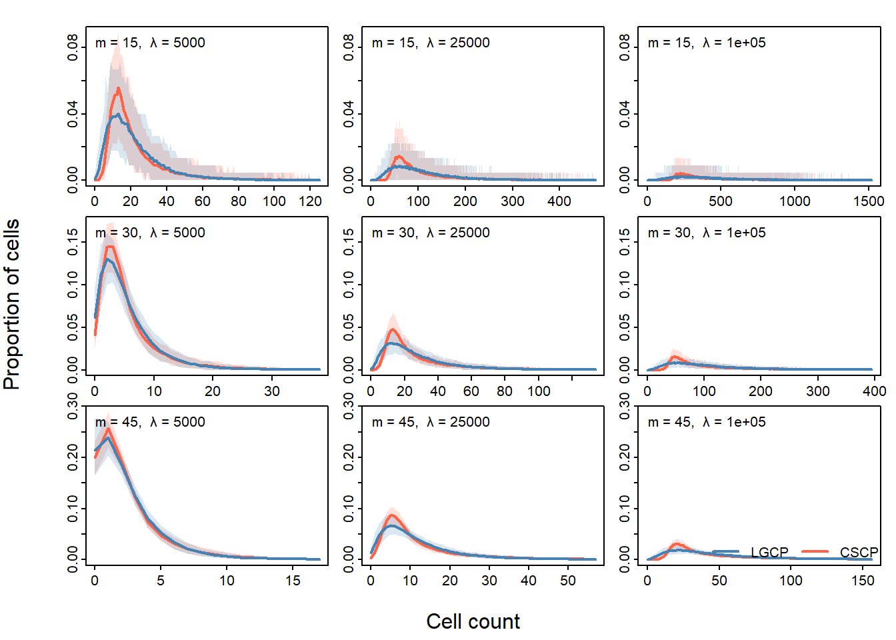
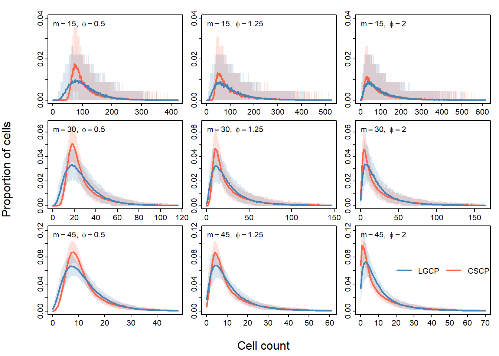

47 Quadrats 2
Choosing quadrat resolutions for testing?
Note
I think the primary goals of this section should be:
It is not immediately clear whether there exists a single grid size for any given parameter setting, which provides the best separation between the two curves
Different grid sizes emphasise the different aspects of the seperation
And I guess secondary goals might be:
Demonstrating how “turning the knobs” effects the two curves
Demonstrating how the scale parameter effects the two curves
47.1 Aim
The goal of this section is to explore how the quadrat-count distribution is affected by both the parameters of the latent field and the grid resolution used.
In particular, we investigate how changes in clustering strength, clustering scale, intensity and grid size alter the separation between the CSCP and LGCP quadrat-count distributions.
This section is primarily visual and exploratory. Its purpose is to identify which parameter regimes and grid resolutions appear most promising for distinguishing the two models, before carrying out a more principled assessment of classification power in the following section.
47.2 Effect of grid resolution
Given a grid of \(m \times m\) quadrats, we obtain a collection of counts
\[ \{N_1, \dots, N_J\}, \quad J = m^2, \]
where each \(N_j\) represents the number of points observed in quadrat \(B_j\).
As in the last section, we summarise these counts through their empirical distribution, that is, the proportion of quadrats with count \(k\),
\[ \hat p_m(k) = \frac{1}{J} \sum_{j=1}^J \mathbf{1}\{N_j = k\}. \]
This provides a discrete approximation to the distribution of local point intensity at the scale determined by the grid.
The choice of grid resolution plays a key role in this representation:
Finer grids (large $ m $) produce many small quadrats, leading to noisier counts that reflect local variability in the process.
Coarser grids (small $ m $) aggregate over larger regions, smoothing local fluctuations and emphasising broader clustering structure.
As a result, differences between the LGCP and CSCP may appear more clearly at some grid resolutions than others.
47.3 Grid resolution setup
We begin by fixing the model parameters and varying only the quadrat grid resolution. The aim is to isolate the effect of grid resolution on the quadrat count distribution, and to understand how the apparent differences between the LGCP and CSCP change across scales.
We use three different grid resolutions to reflect a coarse, intermediate and fine partitioning of the window:
Coarse - 15x15
Intermediate - 30x30
Fine - 45x45
As in the last section, we also fix
\[ \lambda = 25000, \qquad \phi = 1, \qquad s_{\text{CSCP}} = 0.1, \]
and use the corresponding matched LGCP scale parameter. As in the last section, these parameter settings are chosen to represent a regime where clustering is clearly present, and where the expected number of points is sufficiently large to ensure that quadrat counts are informative across a range of grid resolutions.
An example of two of the point patterns, partitioned into quadrats is provided below:
We run the study as below:
grid_study <- run_quadrat_count_study(
W = owin(),
lambda = 25000,
phi = 1,
s_cscp = 0.1,
grids = c(15, 30, 45),
n_sims = 200,
seed = 123
)The following figure shows the mean quadrat count distributions for each grid resolution, with pointwise Monte Carlo intervals.

To aid interpretation, we also track several scalar summaries of the count distribution.

Several clear patterns emerge.
As the grid becomes finer, the average number of points per quadrat decreases. This shifts the count distributions toward smaller values and increases the importance of discreteness. At the finest resolutions, most quadrats contain only a small number of points, often close to zero or one. This makes the distributions more sensitive to random variation, and less stable across simulations.
At the coarsest resolutions, quadrat counts are large, but each cell averages over a substantial region of the intensity surface. Because each quadrat covers a larger region, the counts average over local fluctuations in the intensity. This makes the two distributions appear more similar overall.
Between these extremes, at the intermediate grid resolution, the differences between the LGCP and CSCP appear most clearly visible (subjective, and quite strong statement, not sure if justified tbh). In particular:
Moderate grid resolution shows differences in the overall shape of the distribution, including peak height and spread.
Coarser grid resolutions can produce larger raw differences in lower-tail (near-zero) summaries, but these differences are accompanied by substantially greater Monte Carlo variability.
This highlights an important point: large differences alone are not sufficient for choosing a grid resolution. A useful grid should produce differences that are both substantial and stable across simulations.
Taken together, these results suggest that different grid resolutions highlight different features of the quadrat count distribution. While intermediate grids appear to offer a useful balance between signal and stability, the evidence here is not sufficient to identify a single clearly optimal choice.
A more formal comparison of classification performance across grid resolutions is therefore required, which we undertake in the following section.
We now investigate how this behaviour changes as the model parameters vary. In particular, we now examine the effect of overall intensity \(\lambda\).
47.4 Effect of intensity
We now investigate how the effectiveness of different grid resolutions depends on the overall intensity \(\lambda\).
This is important because the quadrat count distribution depends not only on the structure of the intensity field, but also on the expected number of points per quadrat. For a grid with \(m \times m\) cells over a window \(W\), the expected number of points per quadrat is approximately
\[ \bar n_q = \frac{\lambda |W|}{m^2} \]
Thus, the same grid resolution can correspond to very different distributions depending on the value of \(\lambda\). A grid that is too fine at low intensity may become appropriate at higher intensity, as the counts per quadrat increase.
lambda_scan <- run_quadrat_lambda_scan(
W = owin(),
lambda_vals = c(5000, 25000, 100000),
phi = 1,
s_cscp = 0.1,
grids = c(15, 30, 45),
n_sims = 200,
seed = 123
)
As \(\lambda\) increases, the expected number of points per quadrat increases for any fixed grid resolution. This reduces discreteness and stabilises the quadrat count distributions, making differences between the LGCP and CSCP more clearly visible.
At low values of \(\lambda\), many quadrats contain few points. In this regime, Poisson variability dominates, and the differences between the two models are more difficult to detect, particularly for finer grids.
As \(\lambda\) increases, the same grid resolutions become more informative. Differences in both the lower tail and the overall shape of the distribution become more stable, and the Monte Carlo variability decreases.
This shows that grid resolution cannot be chosen independently of \(\lambda\). Instead, it should be interpreted relative to the expected number of points per quadrat. In particular, useful grid resolutions are those for which quadrat counts are sufficiently large to avoid excessive discreteness, but not so large that spatial averaging removes local structure.
These results suggest that the appropriate grid resolution becomes finer as \(\lambda\) increases. Equivalently, grid choice should be guided by the expected count per quadrat, rather than the absolute number of grid cells.
Note
This is so mind numbing at this point. I dont even see the point if I’m being honest, I would rather just jump straight to a study of power.
I understand we have to motivate our choices for candidate grid resolutions, but I’m so bored of plotting these and adding commentary jeesus
47.5 How this changes with \(\phi\)
We next investigate how the effectiveness of different grid resolutions changes with the clustering strength \(\phi\). Here \(\lambda\) and \(s_{\text{CSCP}}\) are fixed, while \(\phi\) is varied.
This is important because \(\phi\) controls the strength of second-order clustering in both models. Larger values of \(\phi\) produce stronger local variation in the intensity field, which may make differences between the LGCP and CSCP count distributions easier to detect.
For each value of \(\phi\), the LGCP scale parameter is re-matched to the CSCP scale parameter so that the models remain comparable at the level of the pair correlation function.
blah blah blah you get the idea…
phi_scan <- run_quadrat_phi_scan(
W = owin(),
phi_vals = c(0.5, 1.25, 2),
lambda = 25000,
s_cscp = 0.1,
grids = c(15, 30, 45),
n_sims = 200,
seed = 456
)
Same story again: no clear best grid resolution, phi has a noticable effect, yada yada yada.
47.6 Brief scale check
Will need to demonstrate how scale effects things, I’m sick of slaving away here.
Just too much plotting code, slowly osing my sanity. Will finish at a later date.
47.7 Key takeaways
The results of this section show that it is unclear whether there is a single quadrat resolution that is uniformly optimal across parameter settings.
Different grid resolutions highlight different features of the quadrat count distribution:
Moderate grids reveal differences in overall shape, including peak height and spread.
Coarser grids tend to exaggerate differences in the lower tail, but these effects are often less stable across simulations.
Finer grids produce many small counts, making the distributions more sensitive to random variation unless the intensity is sufficiently large.
Moreover, the effectiveness of a given grid depends on the underlying parameters, particularly the intensity \(\lambda\), through the expected number of points per quadrat.
Taken together, these results suggest that selecting a single “optimal” grid resolution is not appropriate. Instead, grid choice should be treated as part of the design of the test statistic itself.
In practice, one could tailor the grid choice to a fitted model by estimating parameters and selecting the grid (or set of grids) with the highest power for that regime. However, this introduces additional complexity and is not considered further here.
Instead, we aim to select a fixed set of grid resolutions that performs well across a range of clustering regimes, and use this set for the remainder of the thesis. In the next section, we conduct a formal power study to assess the performance of candidate grid choices and determine an appropriate selection.
Note
Think this is slightly too verbose.
Basically, we will be testing a bunch of candidates, and seeing how they perform across multiple parameter regimes.
Then for this thesis, we will choose the one which seems the most robust across all regimes.
In practice, it would be better to fit your model, and then do a power-test to figure out which grid set has the greatest power for your fitted model, and then use this in your MC hypothesis test.
Note that it is important if you were to perform the grid-selection using a power study, that you only use the fitted parameters, and never compare grid performance on the observed data.